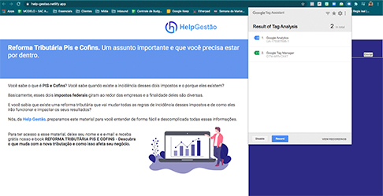
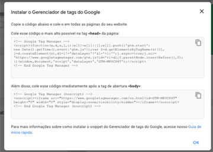

295 pessoas acessaram o site da Help Gestão durante o período, contabilizando 165 leads válidos. Taxa de conversão final de 55%
Investimento em Facebook e Instagram Ads para as duas personas envolvidas. Decidimos pausar os anúncios para PME devido ao CPL mais caro. Contamos com 179 acessos via facebook / cpc e 131 cadastros para receber o material, totabilizando uma taxa de conversão de 73%
Clique em cada tópico para saber mais sobre a execução
Definição da Proposta de valor
Foi uma das primeiras etapas em que estudamos os serviços e funcionalidades que a nossa plataforma entrega para entender como comunicar isso ao lead de forma concisa, de forma que ele veja como nós vimos os ganhos adicionais de usar nosso serviço. Esse item foi necessário para que pudéssemos construir todo nossa material textual, de imagem, de ads e até o nosso conteúdo rico, pois ele deve apelar para aqueles verão o benefício de escolher a gente e com isso reforçar que somos mesmo a melhor opção do mercado.
SEO checklist
Para esse assignment por causa do tempo entendemos que o SEO ele demanda uma análise de longo prazo e um esforço de longo prazo que para a entrega da semana não traria o retorno que precisávamos, por isso, optamos por fazer o title de acordo com as práticas de SEO apenas.
Definição de CTAs
Para definir as CTAs consideramos que o estágio do funil em que nosso cliente estava era o topo, logo para que ele pudesse engajar com a nossa plataforma, se interessar pelo que oferecemos de serviço pensamos em levá-lo ao nosso material rico e estabelecendo essa troca mostrar nossos serviços e diferenciais. Aplicamos as CTA na nossa página no facebook incentivando o download do Ebook sobre a Reforma tributária e no linkedin a equipe Hustlers fez uma série de posts em que apresentando nosso material rico ao mercado e ganhando leads.
Criação das redes sociais pertinentes
Criar as redes sociais foi uma tarefa nova para duas das Hypers então nós pesquisamos um monte para criação do Facebook for business. Focamos principalmente numa página no Facebook pela facilidade em anunciar lá e no Instagram. A atividade deu certo, as pages foram criadas.
Criação das imagens e textos dos Posts
Os textos dos posts foram criados em parceria com a equipe de hustlers que já vinha trabalhando nas copys para divulgação. A atividade deu certo, conseguimos fazer três posts com texto e imagem.
Criação de texto, imagem e CTA dos Ads
Assim como nos posts os textos para ads foram criados pensando em levar o lead a baixar nosso conteúdo rico então usamos a reforma tributária para chamar atenção para informação que pudesse ser compartilhada entre lead e seu cliente (CTA) e para isso seria necessário o nosso material. Os ads foram publicados com sucesso.
Compra de mídia e otimização
Compra de mídia foi feita para impulsionamento dos ads no Facebook e no Linkedin, fazendo com que atingissemos mais público qualificado. A atividade deu certo, pois implementamos um orçamento e aplicamos aos anúncios a medida que analisamos o retorno por público-alvo.
Definição e criação de persona
A criação e definição de persona foi feita com base na proposta de valor e no público-alvo que tínhamos encontrada nas atividades anteriores. Foi uma atividade difícil no sentido de ter certeza de que estávamos representando fielmente os dados de público que tínhamos disponível. Atividade deu certo e serviu para nortear o foco dos ads e dos posts que vieram depois.
Priorização de canal
Para nós o canal que traria mais retorno e uma otimização mais rápida quando consideramos o tempo disponível foram os anúncios no facebook e instagram e a página no Facebook. A escolha desses canais deu informações muito importantes para escolha de investimento do orçamento e segmentação dentro do público-alvo.
UTM
A tag de rastreamento de trafego foi aplicada a Landing page em parceria com as hackers, foi uma tarefa dificil pois parte da equipe nunca tinha feito, mas a expertise de Raissa permitiu que entregassemos logo nos primeiros dias.
Prototipação de canal
Para essa tarefa fizemos três posts na página do facebook com o intuito de testar o canal, mas o fator tempo fez com que elas saíssem muito próximas entre si não permitindo a mensuração e otimização como gostaríamos.
Implementação de Google analytics
Novamente foi uma tarefa que era nova para algumas pessoas da equipe e difícil, mas com a ajuda de Raissa pudemos ter um analytics funcionando já na segunda e implementado em parceria com as Hackers, sendo monitorado pelo tag assistant do google.
 Facebook Pixel
Foi instalado junto com o analytics e implementado em parceria com as Hackers na page. Igual ao analytics foi uma atividade difícil para parte da equipe, pois era conteúdo novo.
Criação de Thank you page
Foi instalado também na thank you page o tag management e a implementação feita em parceria com as Hackers.
Tagging de eventos
Atividade realizada com sucesso em parceria com Hackers para implementação do código de trackeamento na landing page. PAra parte da equipe foi necessário pesquisar sobre códigos de trackeamento pois nunca tínhamos visto ou implementado um. Novamente a expertise da Raissa foi importante.